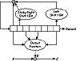

| Previous | Table of Contents | Next |
David Gifford invented a stream cipher and used it to encrypt news wire reports in the Boston area from 1984 until 1988 [608,607,609]. The algorithm has a single 8-byte register: b0, b1,..., b7. The key is the initial state of the register. The algorithm works in OFB; the plaintext does not affect the algorithm at all. (See Figure 16.17).
To generate a key byte ki, concatenate b0 and b2 and concatenate b4 and b7. Multiply the two together to get a 32-bit number. The third byte from the left is ki.
To update the register, take b1 and sticky right shift it 1 bit. This means the left-most bit is both shifted and also remains in place. Take b7 and shift it 1 bit to the left; there should be a 0 in the right-most bit position. Take the XOR of the modified b1, the modified b7, and b0. Shift the original register 1 byte to the right and put this byte in the left-most position.
This algorithm remained secure throughout its life, but was broken in 1994 [287]. It turns out that the feedback polynomial isn’t primitive and can be attacked that way—oops.

Figure 16.17 Gifford.
The name is from Knuth [863]. It’s a method for combining multiple pseudo-random streams that increases their security. One generator’s output is used to select a delayed output from the other generator [996,1003]. In C:
#define ARR_SIZE (8192) /* for example — the larger the better
*/
static unsigned char delay[ ARR_SIZE ] ;
unsigned char prngA( void ) ;
long prngB( void ) ;
void init_algM( void )
{
long i ;
for ( i = 0 ; i < ARR_SIZE ; i++ )
delay = prngA() ;
} /* init_algM */
unsigned char algM( void )
{
long j,v ;
j = prngB() % ARR_SIZE ; /* get the delay[] index */
v = delay[j] ; /* get the value to return */
delay[j] = prngA() ; /* replace it */
return ( v ) ;
} /* algM */
This has strength in that if prngA were truly random, one could not learn anything about prngB (and could therefore not cryptanalyze it). If prngA were of the form that it could be cryptanalyzed only if its output were available in order (i.e., only if prngB were cryptanalyzed first) and otherwise it was effectively truly random, then the combination would be secure.
Roger Schlafly designed the encryption algorithm built into the PKZIP data compression program. It’s a stream cipher that encrypts data one byte at a time. At least, this is the algorithm in version 2.04g. I can’t speak for later versions, but unless there is some announcement you can probably assume that they are identical.
The algorithm uses three 32-bit variables, initialized as follows:
It has an 8-bit key, K3, derived from K2. Here is the algorithm (all symbols are standard C notation):
The function crc32 takes the previous value and a byte, XORs them, and calculates the next value by the CRC polynomial denoted by 0×edb88320. In practice, a 256-entry table can be precomputed and the crc32 calculation becomes:
The table is precomputed by the original definition of crc32:
To encrypt a plaintext stream, first loop the key bytes through the encryption algorithm to update the keys. Ignore the ciphertext output in this step. Then encrypt the plaintext, one byte at a time. Twelve random bytes are prepended to the plaintext, but that’s not really important. Decryption is similar to encryption, except that Ci is used in the second step of the algorithm instead of Pi.
Security of PKZIP
Unfortunately, it’s not that great. An attack requires 40 to 200 bytes of known plaintext and has a time complexity of about 227 [166]. You can do it in a few hours on your personal computer. If the compressed file has any standard headers, getting the known plaintext is no problem. Don’t use the built-in encryption in PKZIP.
| Previous | Table of Contents | Next |
){kind=link}
){kind=link}